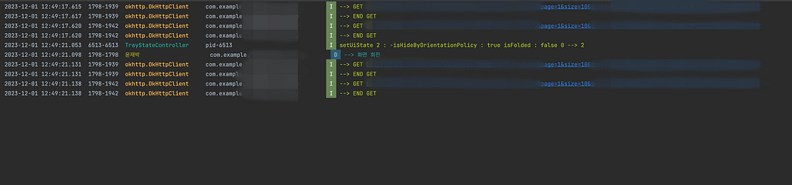
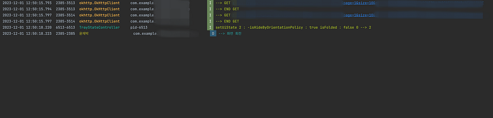

Paging3의 장점 중 하나인 페이징 된 데이터의 메모리 캐싱인데 그렇다면 이 캐싱된 데이터는 어떻게 활용 되는지 궁금해졌습니다.
공식 문서를 보면 페이징 캐싱에 관한 구현은 다음과 같이 돼있습니다.
val flow = Pager(
// Configure how data is loaded by passing additional properties to
// PagingConfig, such as prefetchDistance.
PagingConfig(pageSize = 20)
) {
ExamplePagingSource(backend, query)
}.flow
.cachedIn(viewModelScope)paging data를 캐싱하는 부분은 cachedIn입니다. 이에 대해 가이드 문서에는 짧게 설명이 돼있습니다.
cachedIn() 연산자는 데이터 스트림을 공유 가능하게 만들고, 제공된 CoroutineScope를 사용하여 로드 된 데이터를 캐시한다. 이 예제는 Lifecycle lifecycle-viewmodel-ktx 아티팩트에서 제공하는 viewModelScope를 사용한다.
이 부분만 읽어서는 캐싱 데이터가 어느 상황에서 사용되는지 판단할 수 없었습니다. 하지만 캐싱을 사용하는 주목적 중 하나는 같은 데이터를 로드할 메모리 캐시영역에서 빠르게 가져오는 것이 목적임으로 config change 할 때 같은 페이징 데이터를 사용함으로 캐싱을 하지 않으면 다시 서버를 찔러서 데이터를 가져오고, 캐싱을 한다면 서버를 다시 찌르지 않고 캐싱된 데이터를 가져온다는 추측을 할 수 있었습니다.
이 추측이 맞는지 직접 눈으로 확인하기 위해 키워드를 검색하고 검색 결과를 페이징 처리해주는 앱을 통해 실험을 진행하였습니다.
실험 케이스는 2가지로 나뉘었습니다. flow데이터에 cachedIn을 한것과 하지 않은것 두가지로 다음과 같이 나누었습니다.
private var _searchResultFlow: Flow<PagingData<SearchResult>> = emptyFlow()
val searchResultFlow get() = _searchResultFlow
fun getSearchResult(query: String) = viewModelScope.launch {
//case1 cachedIn 적용하지 않은 코드
_searchResultFlow = mainRepository.getSearchResult(query).flow
//case2 cachedIn 적용 코드
_searchResultFlow = mainRepository.getSearchResult(query).flow.cachedIn(viewModelScope)
}시나리오를 다음과 같이 진행했습니다.
- 키워드를 검색
- 검색 결과가 보여진 후 화면 회전
- 로그를 확인하여 서버를 다시 찌르는지 확인
Case1 cachedIn을 적용하지 않은 코드 로그

Case2 cachedIn을 적용한 코드 로그

cachedIn을 하지 않았을 경우 화면 회전을하면 페이징 내부에서 서버를 다시 찌르는 로직을 타는 반면, cachedIn 적용 후 화면 회전을 하면 캐싱된 데이터를 적재하여 서버를 다시 찌르지 않았습니다. config change 시나리오와 같이 같은 데이터를 쓰게 될 경우 라이브러리가 알아서 캐싱 된 데이터를 가져와 초기화해줌으로써 서버를 다시 찌르는 번거로움이 없어졌으며, 이는 페이징 라이브러리의 큰 장점 중 하나인 메모리 캐싱을 이용하는 사례가 될 수 있습니다.
이를 통해 왜 페이징 flow에 cachedIn을 하는지 알게 됐습니다.